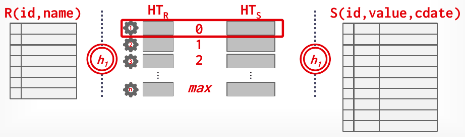
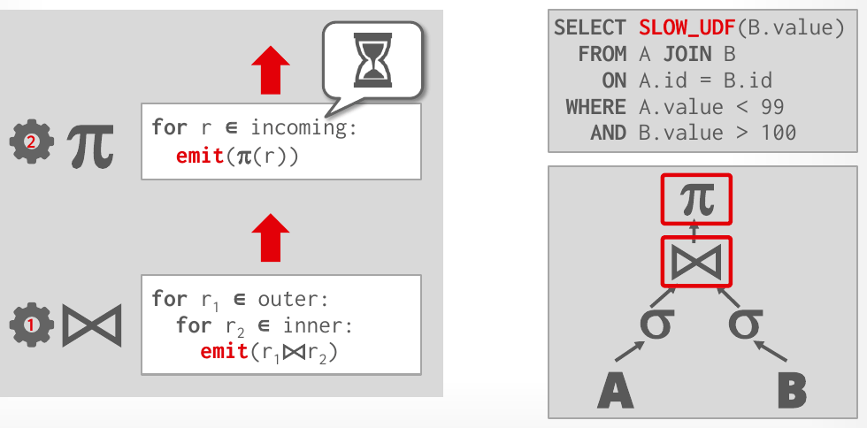
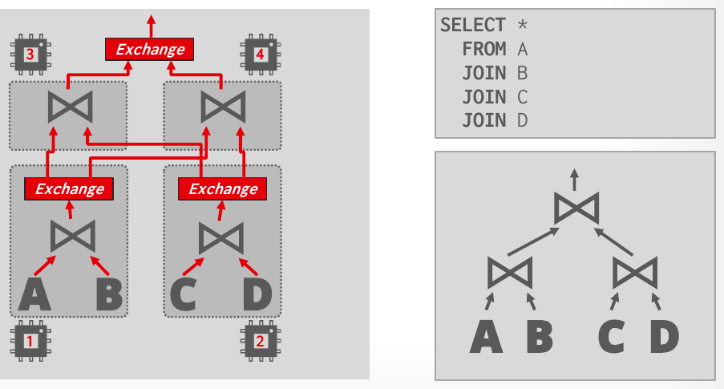
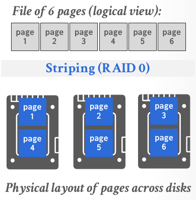

Database Internals in Go · Unit 5 · Lesson 6
Parallel Query Execution
Compare the process models a DBMS can use for its workers, tell inter-query from intra-query parallelism, and place the intra-operator, inter-operator and bushy forms of parallelism, with their exchange operators, on a query plan.
Lesson 5 assumed that one worker runs each query. Real systems run many tasks at the same time to use all their cores and disks. Lecture #14 (CMU's "Query Execution II") asks three questions: how a DBMS organizes its workers, how it splits work across them within and between queries, and how it spreads data over several storage devices so the disks can keep up. BusTub implements none of this, so the lesson is theory for the course, though the Go tools that would build it are ones you already know.
Unit 5, Lesson 4: in Lecture #12's example (M = 1,000 pages, N = 500 pages), a Grace hash join without recursive partitioning costs 4,500 I/Os. How do they split between its two phases?
Unit 3, Lesson 7: a thread finds a test-and-set spin latch already held. Who decides what the thread does next, compared with a blocking OS mutex?
Unit 5, Lesson 2: an external hashing aggregate runs with B = 100 buffer pages. How many partitions does phase #1 create, and how does phase #2 build each partition's hash table?
Parallel and distributed DBMSs
A DBMS spreads a database over several resources for three reasons: to handle data sets that don't fit on one machine, to get more performance from parallel processing, and for redundancy and fault tolerance. The resources can be computational (CPU cores, sockets, GPUs, more machines) or storage (disks, memory). Lecture #14 separates two kinds of system:
- In a parallel DBMS, the resources are physically close to each other and talk over a high-speed interconnect. Communication is assumed to be cheap and reliable.
- In a distributed DBMS, the resources can be far apart, even in different data centers, and talk over a slower interconnect. Communication costs and failures can't be ignored.
Either way, the application sees a single logical database, and a SQL query must return the same result as on a single-node DBMS. This lesson is about parallel systems; distributed databases come later in the course.
Process models
A DBMS's process model defines how the system is built to support concurrent requests. A worker is the component that executes tasks on behalf of a client and returns the results. Slide 8 lists three models.
Process per worker. Each worker is a separate OS process. A dispatcher receives a new connection and hands it to one of the worker processes, and the application then talks to that worker directly. The OS schedules the workers, which the notes say reduces the DBMS's control over execution. Global data structures live in shared memory so that every process can use them. The advantage is fault isolation: a process crash doesn't take down the entire system. IBM DB2, Postgres and Oracle work this way. The notes explain why: when they were written, pthreads were not yet the standard threading model, and fork() behaved more consistently across operating systems than threads did.
Thread per worker. One process runs many worker threads, and the DBMS (mostly) manages its own scheduling, with or without a dispatcher thread. Slide 13 lists two advantages: less overhead per context switch, and no shared memory to manage. The cost is that a thread crash may kill the entire system. Microsoft SQL Server and MySQL work this way, and the notes say DB2 and Oracle have added support for it (the slide dates Oracle's to 2014). Slide 8 calls it the most common model.
Embedded DBMS. The DBMS runs in the same address space as the application, which is (primarily) responsible for threads and scheduling. Slide 11's examples are BerkeleyDB, SQLite, RocksDB and LevelDB; the notes add DuckDB, which you ran from Python in Unit 0.
Whatever the model, slide 12 says the DBMS has to decide for each plan where, when and how to run it: how many tasks and CPU cores to use, which core each task runs on, and where each task stores its output. "The DBMS nearly always knows more than the OS", which is the same argument Unit 2 made for the buffer pool and the disk scheduler.
Slide 13 adds a warning: the thread per worker model "does not mean that the DBMS supports intra-query parallelism". The process model says how workers are organized. Whether one query can use several of them is a separate design choice, covered next.
#14 Query Execution II, "Database process models" (8:15), slides 7–10: workers, the dispatcher, and the process per worker and thread per worker models.
Inter-query and intra-query parallelism
Parallel execution means running several tasks at once to improve hardware utilization. The tasks don't have to belong to the same query, and the high-level approaches are the same whether the DBMS is multi-threaded, multi-process or multi-node. There are two:
- Inter-query parallelism runs different queries at the same time, which raises overall throughput. Most DBMSs admit queries first come, first served. Read-only queries need almost no explicit coordination, since the buffer pool handles most of the sharing. Queries that update the database at the same time are tricky to get right; that is concurrency control, from Lecture #17 on.
- Intra-query parallelism runs the operators of a single query in parallel. The notes say it decreases latency for long-running queries. The lecture describes it as producers and consumers: each operator produces data for the operator above it and consumes data from the one below.
There are parallel versions of every operator. They either let several threads access a central data structure or use partitioning to divide the work. Slide 18 lists three forms of intra-query parallelism, which can be combined: intra-operator (horizontal), the most common; inter-operator (vertical), less common; and bushy, found in higher-end systems.
Intra-operator parallelism and exchange operators
Lesson 4's Grace hash join is already set up for parallel work. After the partition phase, bucket i of R can only join with bucket i of S, so a separate worker can join each pair of buckets.

Intra-operator parallelism generalizes this. Each operator is split into independent instances that perform the same function on different subsets of the data. To combine or split the instances' streams, the DBMS inserts an exchange operator into the plan. PostgreSQL calls its exchange operators Gather. An exchange can combine its inputs in any order or merge them on a sort key.
![Right: the query SELECT A.id, B.value FROM A JOIN B ON A.id = B.id WHERE A.value < 99 AND B.value > 100 and its logical plan, a projection over a join of filtered A and filtered B, with the join outlined in red. Left: the parallel plan. Fragments A1, A2 and A3 each run on worker 1, 2 or 3 through a filter into a Build HT box; their outputs meet in an Exchange operator that feeds the join. Fragments B1, B2 and B3 each run on a worker through a filter into a Probe HT box that feeds the join. Three projection instances sit above the join, and a final Exchange at the top combines them.](../assets/slides/L14-intra-operator-exchange-p31.png)
Slide 21 names three kinds of exchange, after Craig Freedman:
- Gather combines the results of several workers into a single output stream. The notes say it is the most common type.
- Distribute splits a single input stream into several output streams.
- Repartition shuffles several input streams across several output streams. The notes put it as taking inputs partitioned one way and redistributing them another way. Some DBMSs, such as Google BigQuery, repartition after every pipeline.
#14 Query Execution II, "Parallel grace hash join" (31:38), slides 17–21: one worker per bucket pair, then the exchange operator, the parallel hash join build and the three exchange types (the next chapter, "The exchange operator", starts at 33:32).
The lecture names no language, but the exchange types map onto Go concurrency patterns you already know. This mapping is mine, not CMU's. A gather is fan-in: each worker goroutine sends its tuples on one shared channel, and a sync.WaitGroup (or an errgroup.Group, if a worker can fail) closes the channel after the last worker returns, so the consumer's for … range loop ends. A distribute is fan-out: one producer feeds several worker channels. A repartition gives every producer the full set of output channels and picks one per tuple by hashing its key, which is the partition phase of a Grace hash join done by many producers at once.
Inter-operator and bushy parallelism
Inter-operator parallelism, also called vertical or pipelined parallelism, runs different operators of the plan at the same time and overlaps them, so data is pipelined from one stage to the next without being materialized. Exchange operators are still needed to combine intermediate results. Slide 23's example is SELECT SLOW_UDF(B.value) FROM A JOIN B …, where the projection calls a slow user-defined function.

The notes add that this approach is widely used in stream processing systems, which run a query continuously over a stream of incoming tuples.
Bushy parallelism is a hybrid of the two: workers execute several operators from different segments of the plan at the same time, and exchange operators combine the segments' results.

The notes' caption for this figure says "a 4-way JOIN on three tables". The query joins four tables, A, B, C and D.
I/O parallelism
More workers don't help if the disk is always the bottleneck. Slide 26 adds that they can make performance worse, when workers access different segments of the same disk at the same time. I/O parallelism splits the DBMS across several storage devices to improve disk bandwidth. The options slide 27 lists are several disks per database, one database per disk, one relation per disk, and one relation split across several disks. Some DBMSs support this natively, such as PostgreSQL's tablespaces; others need an administrator to set it up outside the DBMS.
Multi-disk parallelism stores data across several disks for performance and durability. With hardware support, an I/O controller makes several physical devices look like one logical device, as RAID does:
- Striping (RAID 0) puts consecutive pages on different disks, so neighbouring pages can be read from different disks at the same time.
- Mirroring (RAID 1) puts a copy of every page on every disk.

RAID is transparent to the DBMS. The notes draw the consequence: since the DBMS can't see the separate devices, it can't assign workers to them. Database partitioning is the alternative the DBMS can see. Some DBMSs let you choose the disk location of each database, and the buffer pool manager maps each page to its location; that is easy at the file-system level if each database lives in its own directory. The recovery log may still be shared if transactions can update several databases. Going further, partitioning splits a single logical table into disjoint physical segments that are stored and managed separately, ideally without the application noticing. The course returns to it with distributed databases.
#14 Query Execution II, "I/O parallelism techniques" (49:12), slides 27–30: the placement options, RAID striping and mirroring, and database and table partitioning.
Why it's hard, and where BusTub stands
The lecture closes by saying that (almost) every major DBMS supports parallel execution, and that it is hard to get right because of coordination overhead, scheduling, concurrency issues and resource contention. BusTub attempts none of it: nothing in its execution code implements exchange operators or intra-query parallelism, and Project 3's executors each pull from their children on the calling thread, as in Lesson 5.
Work it out
-
What to think about
Striping deals pages out to the disks in turn; mirroring copies each page everywhere.
The method
Under striping, page i goes to disk ((i − 1) mod 3) + 1, which matches the figure for pages 1 to 6. Under mirroring, any disk can serve any page.
The result
Striping: page 7 is on disk 1 (with pages 1 and 4), and a full scan reads three pages from each of the three disks. Mirroring: page 7 is on all three disks, and a scan could read from any or all of them. Either way the DBMS sees one logical device and can't choose.
The homework behind these questions
The questions marked HW4 come from CMU's Homework #4: Question 2, with the original figures. Work each one out on paper first, then click the option you got. The quiz tells you at once whether it matches CMU's official answer, and explains why. To compare your working step by step, open the official solutions for Question 2.
Check your understanding
HW4 Q2(d): compare process per worker with thread per worker. Which statement is true?
HW4 Q2(e): can intra-query parallelism improve the performance of OLAP queries that run complex operations over large data sets?
A DBMS uses the thread per worker model. What can you conclude about intra-query parallelism?
Three workers each scan and filter one fragment of a table. Which exchange type combines their output into the single stream the next operator reads?
In SELECT SLOW_UDF(B.value) FROM A JOIN B …, worker 1 runs the join and streams each result tuple to worker 2, which applies SLOW_UDF while worker 1 keeps joining. Which kind of parallelism is this?
Primary sources: CMU 15-445/645 Fall 2025 Lecture #14 slides 3–31 and notes (sections 1–6); Homework #4 Question 2(d) and (e) and the official solutions; BusTub src/execution/ at commit d49b823; Lectures #10, #11 and #12 (warm-up); the Go documentation for sync and golang.org/x/sync/errgroup.